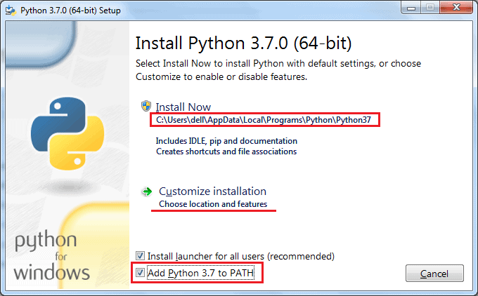

<!DOCTYPE html>
<html lang="es">
	<head>
		<meta charset="utf-8">
		<title>Programs, languages and compilers</title>
		<meta name="viewport" content="width=device-width, initial-scale=1.0">
		<link rel="stylesheet" href="../../../reveal/dist/reveal.css">
		<link rel="stylesheet" href="../../../reveal/dist/theme/white.css" id="theme">
		<link rel="stylesheet" href="../../../reveal/plugin/highlight/custom.css">
	</head>

	<body>
		<div class="reveal">
			<div class="slides">
                <section data-markdown>
<script type="text/template">
## Programs, languages and compilers
### First steps with Python
</script>
</section>

<section data-markdown>
<script type="text/template">
## Python
    
* Multi-platform
* Beginning of the 90s
* Code is more compact
* Usages: scripts, desktop, web (Django), hacking, deep learning...

</script>
</section>

<section data-markdown>
<script type="text/template">
## Installing Python (1/3)

- **Mac** and **Windows**: download from [official web site](https://www.python.org/downloads/)
    - Use Python version 3
- **Linux**: 

```
sudo apt-get install python3
```

</script>
</section>

<section data-markdown>
<script type="text/template">
## Installing Python (2/3)

In **Windows** remember to check PATH update



</script>
</section>

<section data-markdown>
<script type="text/template">
## Installing Python (3/3)

Check installation with one of these commands depending on your operating system

```
python -version
```

```
python3 -version
```
</script>
</section>
        
<section data-markdown>
<script type="text/template">    
## Exercise
    
Create a source file called **test.py** in your source folder with this code. Run it using **python test.py** or **python3 test.py** (depending on your Python interpreter)

```python
print("Hello")
```

</script>
</section>
            </div>
		</div>

		<script src="../../../reveal/dist/reveal.js"></script>
		<script src="../../../reveal/plugin/zoom/zoom.js"></script>
		<script src="../../../reveal/plugin/markdown/markdown.js"></script>
		<script src="../../../reveal/plugin/highlight/highlight.js"></script>
		<script>

			// Also available as an ES module, see:
			// https://revealjs.com/initialization/
			Reveal.initialize({
				controls: false,
				progress: false,
				center: true,
                hash: true,
                width: "80%",

				// Learn about plugins: https://revealjs.com/plugins/
				plugins: [ RevealZoom, RevealMarkdown, RevealHighlight ]
			});

		</script>

	</body>
</html>
